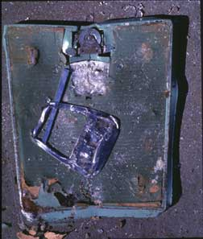

The
Scales Project
by
Anne Beffel
|  |
Working Note:
“The Scales Project,” also called “Wasted” and “Flattened,” began to take form one day when I dismantled a bathroom scale and found it devoid of the omnipresent voice I had projected onto it. I subsequently sent an email to students and faculty on three college campuses inviting them to donate bathroom scales for a performance piece during which the scales would be flattened with a steamroller. Additionally, I asked for volunteers to be interviewed in response to questions such as “If your bathroom scale could say anything in the world to you, what would it say?” Comments from those interviews include “It wouldn’t be a number. It would be a measure of how beautiful, how much I have inside of me.” One woman internalized the voice of the male teacher in “The Dead Poets Society” and wished her scale would say “Carpe Diem…seize the day boys! Seize the day!” A third interviewee commented: “If the enemy has an outpost in our heads, then maybe the scale is the outpost.”
Bio:
Anne Beffel studied Fine Arts at the University of Michigan where she received her BFA and at the University of Iowa where she received her MA and MFA. She participated in the Whitney Independent Studio Program in 1999-2000 and is currently an Assistant Professor of Art at Syracuse University.
Beffel explores ideas of personal and social equilibrium through interactive and collaborative projects that inhabit quotidian and institutional spaces. Through the juxtaposition of physically altered, mundane objects and narratives gathered from the media, personal conversations, and documentary interviews, Beffel points to power relations that inform human existence at minute and gigantic scales. She invites us to examine and question the roles we play within hierarchies and how these roles manifest themselves in our daily gestures of work, care, and consumption.
Beffel’s work has been shown extensively in the United States and she is the recipient of numerous grants, residencies and awards. She has exhibited in New York at the Whitney Museum of American Art’s Open Studio and the Pratt Institute of Fine Arts. Her work has also been exhibited recently at the Maryland Institute of Art in Baltimore.